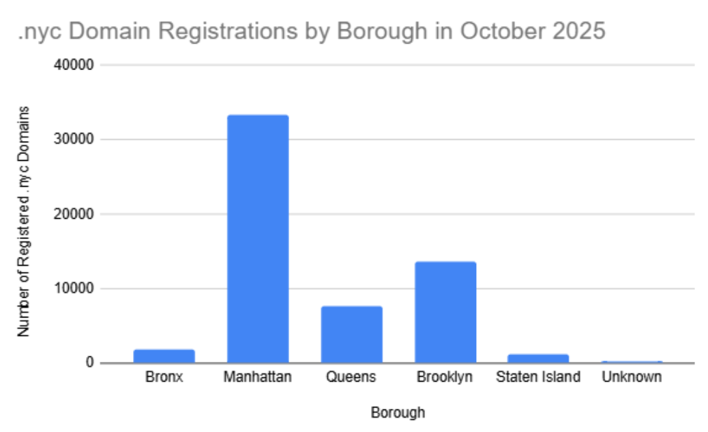
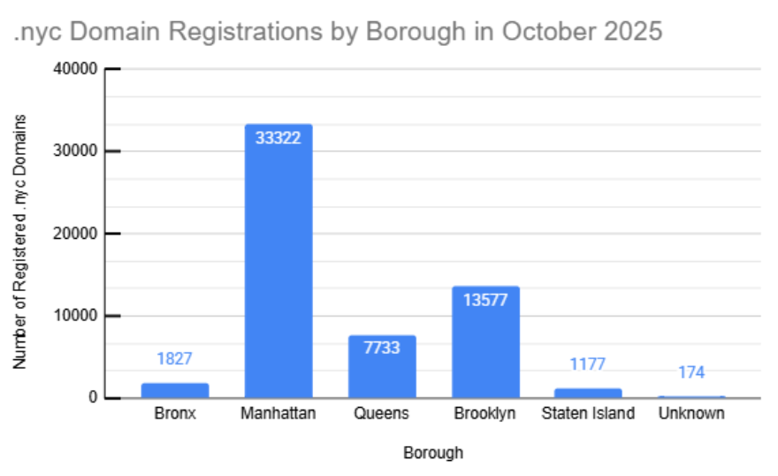
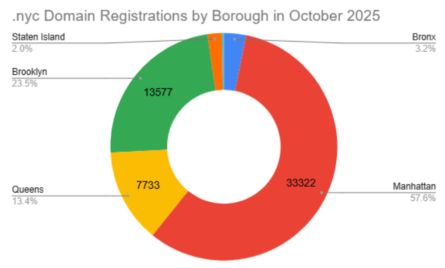
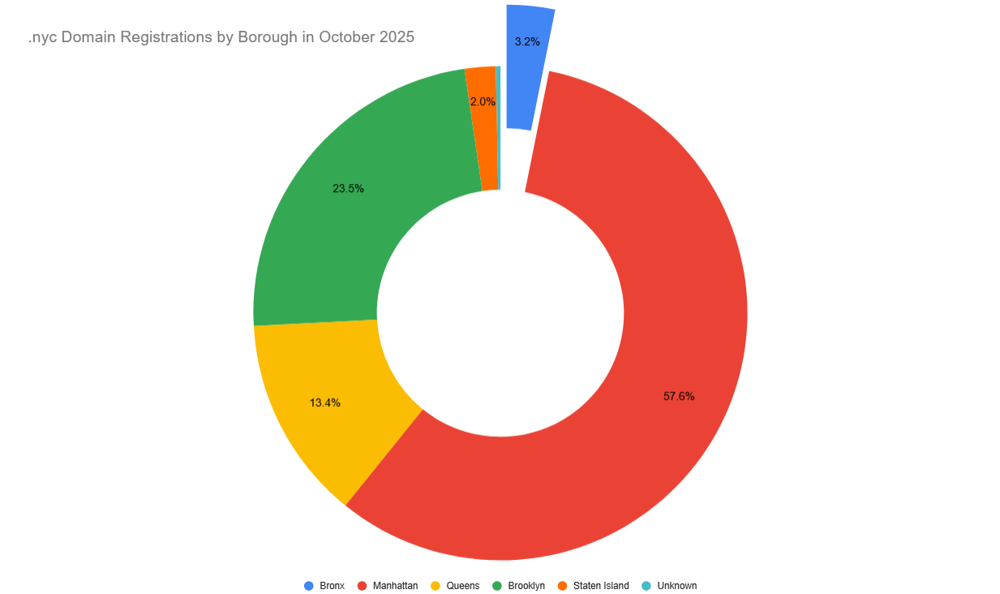

Project 1: Basic Charts
For our initial project, I chose to utilize the ".nyc Domain Registrations by Zip Code" dataset, which provided statistics on how many ".nyc" domains were registered in each New York City zipcode as of October 7, 2025.
The only processing I applied to the data itself was to combine values by borough instead of zip code. This means that the data refers to the amount of domains registered in Manhattan, Bronx, Queens, Brooklyn, or Staten Island rather than the amount registered in a given zipcode.
Link to dataset.
Charts

Initial Chart
This initial chart is a basic bar chart comparison of the data. It's incredibly easy to understand, but it is basic and doesn't allow for deep insight.

Chart Revision 2
This version of the chart includes more detail to allow for in-depth comparisons. The addition of grid lines makes it easier to compare bars, and numbers are labelled on the chart to clarify any uncertain comparisons.

Chart Revision 3
I decided to try a different type of comparison altogether - a donut chart. This allows for really intuitive comparisons with nearly complete data preservation while keeping the chart visually interesting. I find that the varying colors helps keep my attention, and the hole in the middle makes it so my eyes go around the circle.

Chart Revision 4
For my last chart, I wanted to try something a little more unique. This chart moves the slice for the Bronx away from the rest of the chart to emphasize it. This chart could be used to highlight the specific data from the Bronx, like, for example, how it makes up around 3% of domains despite making up around 15% of the city's population.